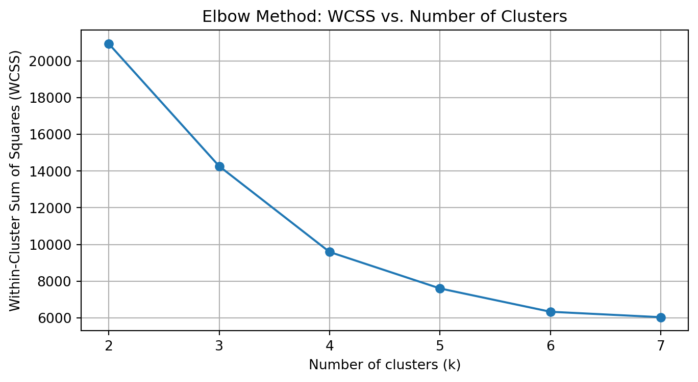

write my own code to implement the k-means algorithm. Make plots of the various steps the algorithm takes so you can “see” the algorithm working. Test the algorithm on the Palmer Penguins dataset, specifically using the bill length and flipper length variables. Compare the results to the built-in kmeans function in Python.
Calculate both the within-cluster-sum-of-squares and silhouette scores and plot the results for various numbers of clusters . What is the “right” number of clusters as suggested by these two metrics?
import matplotlib.pyplot as pltfrom sklearn.cluster import KMeans as SKlearnKMeansfrom sklearn.metrics import silhouette_scoreks =list(range(2, 8))wcss = []silhouette_scores = []for k in ks: kmeans = SKlearnKMeans(n_clusters=k, random_state=42) labels = kmeans.fit_predict(data) wcss.append(kmeans.inertia_) silhouette_scores.append(silhouette_score(data, labels))plt.figure(figsize=(8, 4))plt.plot(ks, wcss, marker='o')plt.xlabel('Number of clusters (k)')plt.ylabel('Within-Cluster Sum of Squares (WCSS)')plt.title('Elbow Method: WCSS vs. Number of Clusters')plt.xticks(ks)plt.grid(True)plt.show()plt.figure(figsize=(8, 4))plt.plot(ks, silhouette_scores, marker='o', color='orange')plt.xlabel('Number of clusters (k)')plt.ylabel('Silhouette Score')plt.title('Silhouette Score vs. Number of Clusters')plt.xticks(ks)plt.grid(True)plt.show()for k, sse, sil inzip(ks, wcss, silhouette_scores):print(f"k = {k}: WCSS = {sse:.2f}, Silhouette Score = {sil:.3f}")

k = 2: WCSS = 20949.79, Silhouette Score = 0.612
k = 3: WCSS = 14269.56, Silhouette Score = 0.456
k = 4: WCSS = 9587.14, Silhouette Score = 0.445
k = 5: WCSS = 7597.61, Silhouette Score = 0.410
k = 6: WCSS = 6326.31, Silhouette Score = 0.414
k = 7: WCSS = 6030.08, Silhouette Score = 0.370
From both plots, the “elbow” in the WCSS curve and the peak in the silhouette score occur at k = 2. In other words, k = 2 is the best choice according to both the elbow method (biggest drop in WCSS when going from 1→2 and a clear kink at 2) and the highest silhouette score (0.612 at k = 2).
2a. K Nearest Neighbors
use the following code to generate a synthetic dataset for the k-nearest neighbors algorithm. The code generates a dataset with two features, x1 and x2, and a binary outcome variable y that is determined by whether x2 is above or below a wiggly boundary defined by a sin function.
import numpy as npimport pandas as pd# Generate the synthetic datasetnp.random.seed(42)n =100x1 = np.random.uniform(-3, 3, n)x2 = np.random.uniform(-3, 3, n)boundary = np.sin(4* x1) + x1y = (x2 > boundary).astype(int)# Create a DataFramedat = pd.DataFrame({'x1': x1, 'x2': x2, 'y': y})
plot the data where the horizontal axis is x1, the vertical axis is x2, and the points are colored by the value of y.
run the function for k=1,…,k=30, each time noting the percentage of correctly-classified points from the test dataset. Plot the results, where the horizontal axis is 1-30 and the vertical axis is the percentage of correctly-classified points. What is the optimal value of k as suggested by your plot?
import numpy as npimport matplotlib.pyplot as pltfrom collections import Counter# Generate training dataset (seed=42)np.random.seed(42)n_train =100x1_train = np.random.uniform(-3, 3, n_train)x2_train = np.random.uniform(-3, 3, n_train)boundary_train = np.sin(4* x1_train) + x1_trainy_train = (x2_train > boundary_train).astype(int)# Generate test dataset (seed=84)np.random.seed(84)n_test =100x1_test = np.random.uniform(-3, 3, n_test)x2_test = np.random.uniform(-3, 3, n_test)boundary_test = np.sin(4* x1_test) + x1_testy_test = (x2_test > boundary_test).astype(int)# Prepare feature matrices and label vectorstrain_X = np.column_stack((x1_train, x2_train))train_y = y_traintest_X = np.column_stack((x1_test, x2_test))test_y = y_test# Manual KNN prediction functiondef predict_knn(train_X, train_y, test_X, k): predictions = []for x in test_X: distances = np.linalg.norm(train_X - x, axis=1) idx = np.argsort(distances)[:k] labels = train_y[idx] pred = Counter(labels).most_common(1)[0][0] predictions.append(pred)return np.array(predictions)# Calculate accuracies for k from 1 to 30k_values =range(1, 31)accuracies = []for k in k_values: preds = predict_knn(train_X, train_y, test_X, k) accuracy = np.mean(preds == test_y) *100# percentage accuracies.append(accuracy)# Identify optimal k (highest accuracy)optimal_k = k_values[np.argmax(accuracies)]optimal_accuracy =max(accuracies)# Plottingplt.figure(figsize=(10, 6))plt.plot(k_values, accuracies, marker='o')plt.xticks(k_values)plt.xlabel('k (Number of Neighbors)')plt.ylabel('Accuracy (%)')plt.title('k-NN Accuracy on Test Set for k = 1 to 30')plt.grid(True)plt.show()# Print optimal k and corresponding accuracyprint(f"Optimal k: {optimal_k}")print(f"Accuracy at k={optimal_k}: {optimal_accuracy:.2f}%")
Optimal k: 1
Accuracy at k=1: 95.00%
The plot of test-set accuracy (in percentage) versus 𝑘(from 1 to 30) shows that:
The highest accuracy (95%) occurs at 𝑘=1 (and also at 𝑘 = 2 since they both give 95%).
After 𝑘 = 2, accuracy generally declines.
Therefore, the optimal value of 𝑘, as suggested by this plot, is 𝑘 = 1.